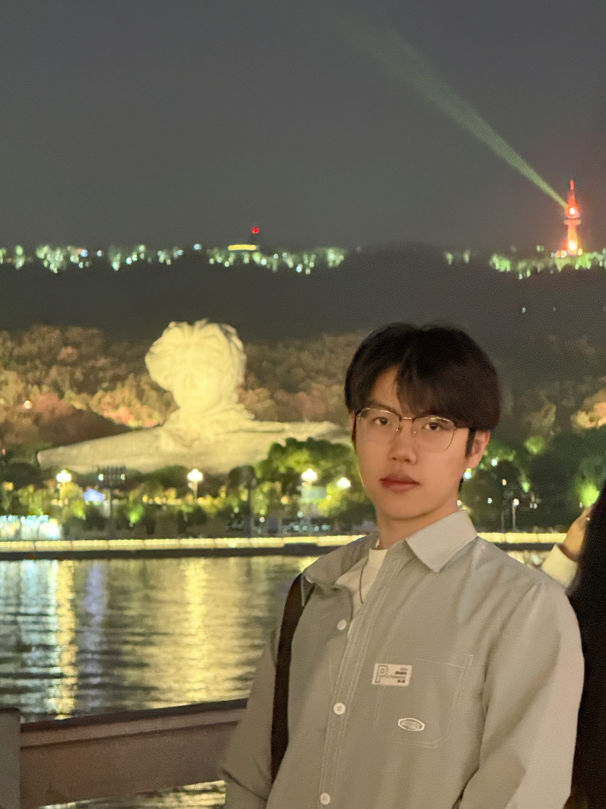
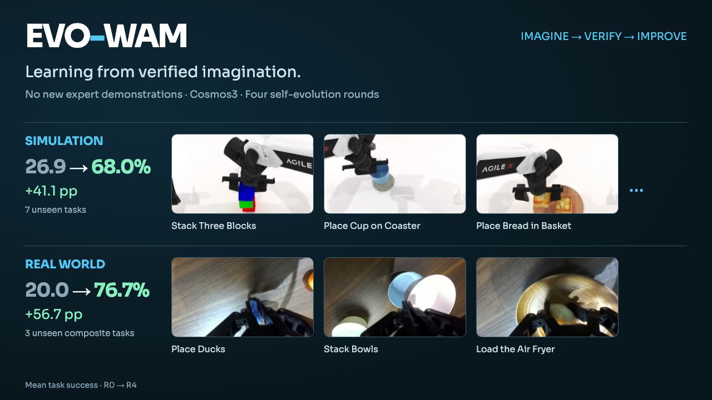
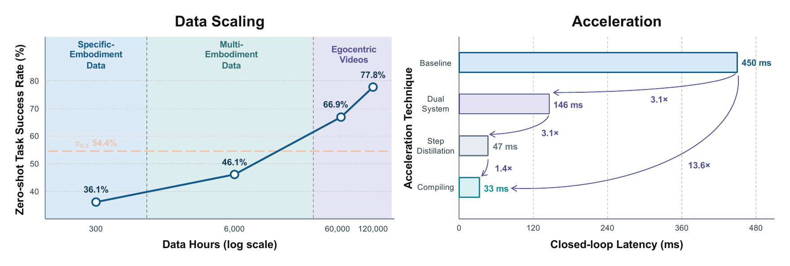
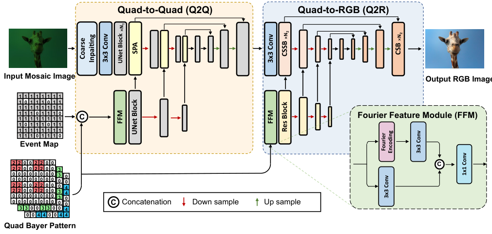
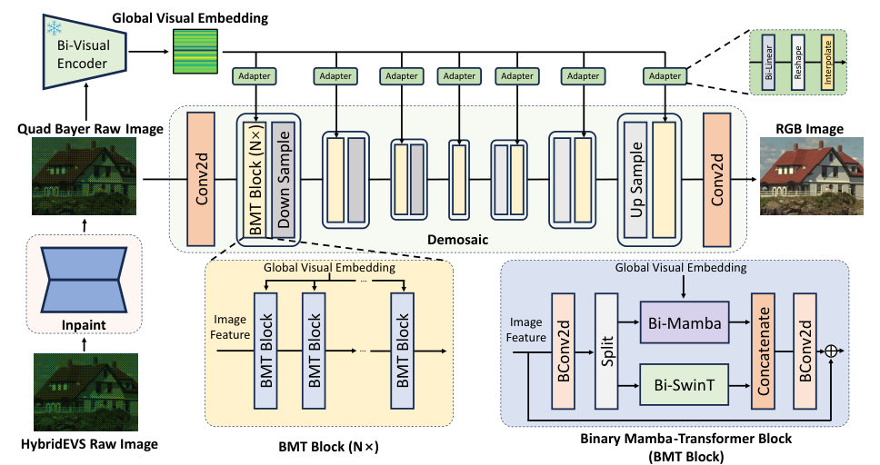
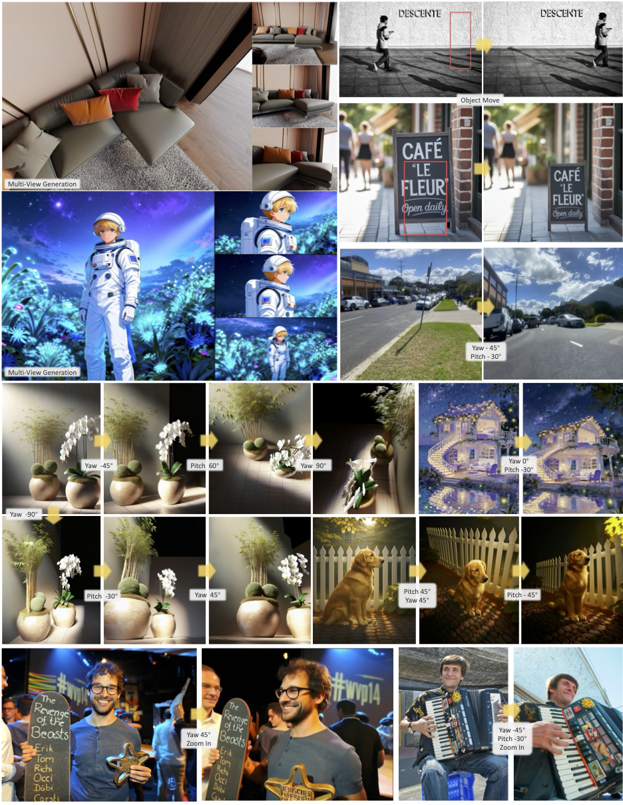

Jan 2026 – present
JD · JOY Future Academy
World action models and visual generation.

I am a Ph.D. student at Harbin Institute of Technology, Shenzhen, with joint doctoral training at Shenzhen Loop Area Institute (SLAI). I am advised by Prof. Jingyong Su and Prof. Zhuotao Tian.
My research interests are video generation, world models, and world action models. I focus on learning robot behavior from video and improving generalization to new tasks. Previously, I worked on efficient image restoration and interned with the Tencent Hunyuan team.
I am looking for research internship opportunities.
Interested in working together? Get in touch.
Jan 2026 – present
World action models and visual generation.
Apr – Sep 2025
Research Intern · TEG
Data curation and automated pipelines for text-to-image generation and identity-consistent image editing.
Oct 2024 – Apr 2025
Research Project
Efficient multi-frame RAW image restoration with Mamba, including joint denoising and demosaicing.

Preprint 2026
* Equal contribution
Improving generalization to new tasks through verified imagination, without additional expert demonstrations.

Technical report 2026 · Core author
Scaling embodied video pre-training for generalizable robot control.

IEEE TMM 2026
Efficient HybridEVS demosaicing with state space augmented cross-attention.

CVPR 2025
A binarized Mamba-Transformer for lightweight image reconstruction.

JoyAI-Image Contributor
A multimodal foundation model with spatial understanding and instruction-guided image editing.
2025Tat-Seng Chua Scholarship
School of Computer Science and Technology, HIT Shenzhen
20243rd Place, CVPR MIPI Challenge
Demosaic for HybridEVS Camera Track
2023 – present
Ph.D. Student · Computer Science and Technology
2025 – present
Joint Ph.D. Training with HIT Shenzhen
2019 – 2023
Bachelor’s Degree · Computer Science and Technology